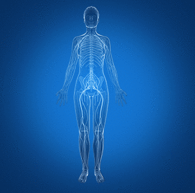

Nervous system is an integration of nerves and they are composed of specialised
cells called Neurons. The human nervous system is divided into the following.
1. Central Nervous System (CNS)
2. Peripheral Nervous System (PNS)

Any Guess? What does the central nervous system consist of?